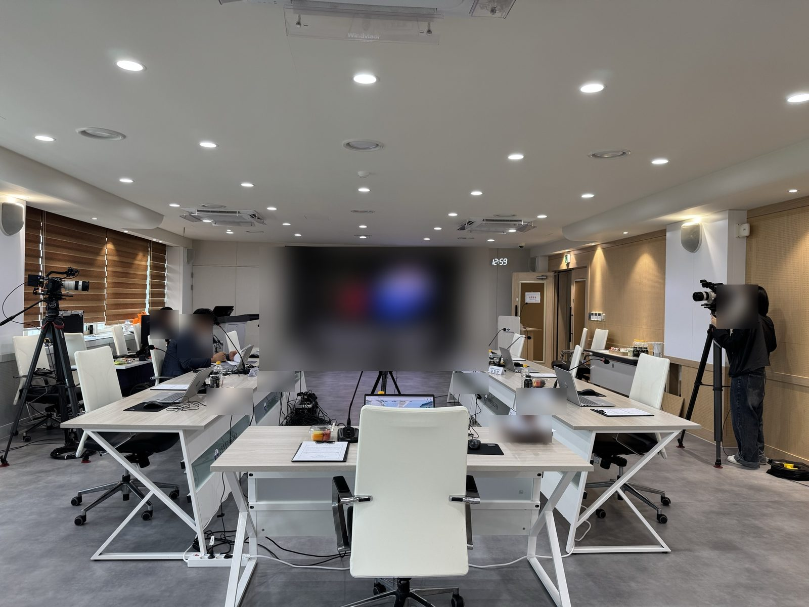
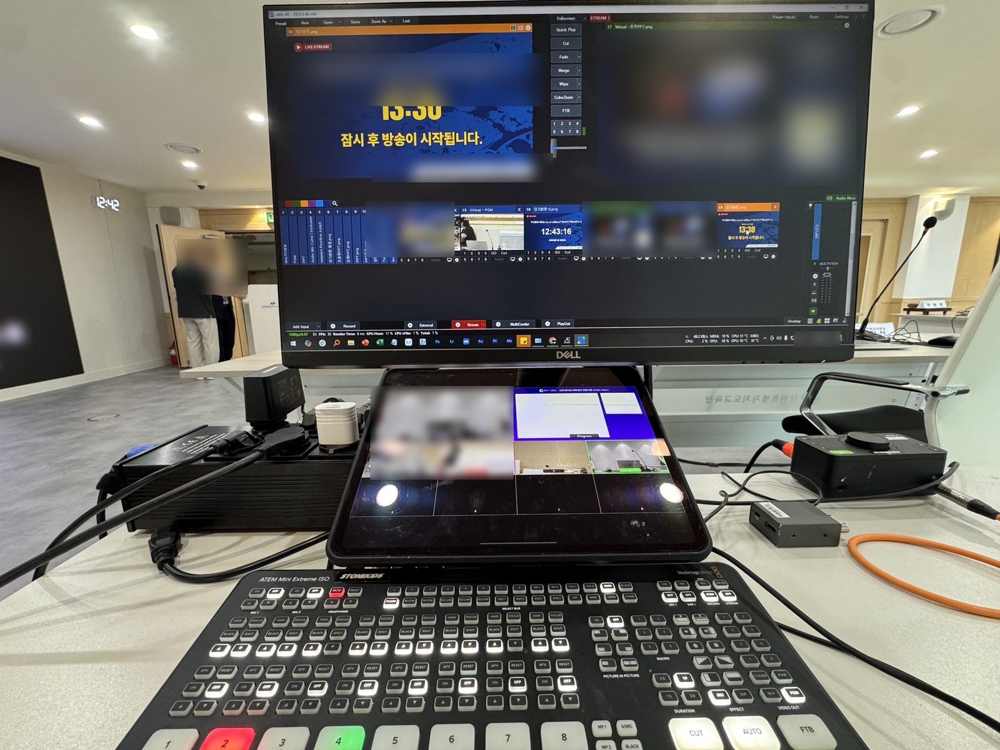

코로나19 이후 지금까지, 공공기관의 설계공모 심사 현장을 중계해왔습니다.눈에 띄지 않게 설치하고, 개입하지 않고, 빠짐없이 기록합니다.이제 AI 전사와 결과보고서까지.
공공 설계공모 심사 생중계코로나19 이후 — 현재촬영 · 음향 · PIP · 선택적 라우팅NEW · AI 전사 · 결과보고서(HWP 계열)

ON AIR
CHAPTER 01 — 왜 중계하는가
‘비공개 원칙’이 ‘실시간 공개 의무’가 되었습니다
설계공모 심사의 공개는 이제 선택이 아니라 규정입니다. 국토교통부 「건축 설계공모 운영지침」의 심사위원회 조항은 한때 “비공개를 원칙으로 하되”로 시작했지만, 2021년 개정에서 “공개해야 하며”로 뒤집혔고, 2023년 4월부터는 이렇게 적혀 있습니다.
“심사위원회의 진행은 정보통신 매체 등을 통해 실시간으로 공개해야 하며, 심사내용을 녹화 또는 녹음하여야 한다.”— 「건축 설계공모 운영지침」 제13조 제4항
변화를 앞당긴 건 코로나19였습니다. 2020년 조달청이 심사를 온라인으로 전환했고, LH가 공공기관 최초로 심사 전 과정을 유튜브로 열었으며, 지금 조달청은 심사 과정 전부를 생중계합니다. “투명한 집행과 공정한 심사는 깨질 수 없는 원칙” — 조달청장의 말입니다.
우리는 그 시기부터 이 현장을 지켜왔습니다. 심사 생중계는 행사가 아니라, 조문이 현장에서 작동하는 방식 — 그래서 우리는 이 일을 공모 공정성을 지키는 참관자의 역할로 정의합니다.
CHAPTER 02 — 설치의 규율
가장 좋은 장비는, 보이지 않는 장비입니다
심사장의 주인공은 심사위원과 작품입니다. 우리의 설치 기준은 하나 — 그림자처럼. 눈에 띄지 않게, 깔끔하게, 동선 밖으로.
그 뒤에서 우리가 책임지는 범위는 다섯 가지입니다.
01현장 촬영 · 녹화 — 다중 카메라 실황 촬영, 전 구간 녹화.
02회의 마이크 · 음향 확성 — 발언 수음과 현장 확성까지. 기록의 품질은 소리의 품질입니다.
03발표자료 PIP — 자료는 풀스크린, 발표자는 PIP. ‘자료와 사람’을 동시에.
04중계 ON · OFF — 공개의 경계는 발주기관이 정하고, 실행은 지연 없이.
05선택적 라우팅 — 송출과 기록의 경로를 분리해, 채널별로 골라 담습니다.

CHAPTER 03 — 디테일
화면에 없는 마우스 포인터를, 그려 넣었습니다
발표자료를 캡처 신호로 송출하면 화면은 깨끗하지만, 그 화면에는 마우스 포인터가 담기지 않습니다. 발표자가 “이 부분이…” 하며 도면을 짚어도, 시청자의 화면에서는 아무것도 움직이지 않습니다.
그래서 캡처 화면 위에 포인터를 오버레이해 함께 송출합니다. 클라이언트가 요구한 사양이 아니라, 시청자의 자리에 앉아 봐야 보이는 문제였습니다.
작은 기능이지만 — 시청자가 발표의 초점을 놓치는 순간, 공개는 반쪽이 됩니다.
CHAPTER 04 — 온에어의 규율
스위치는 우리 손에, 결정은 심사장에
심사 도중 “이 부분은 비공개로 논의하자”는 판단은 언제든 나올 수 있습니다. 실제 그런 순간, 요청과 동시에 마이크 송출만 즉시 차단했고, 규칙대로 기록 채널은 유지했으며, 논의 후 위원장이 결론만 낭독하는 것으로 중계는 끊김 없이 이어졌습니다.
스위치는 우리 손에 있었지만, 결정은 처음부터 끝까지 심사장에 있었습니다. 송출·기록·확성을 독립된 경로로 두고 경로 단위로 열고 닫는 것 — 선택적 라우팅의 이 유연함이 곧 신뢰가 됩니다.
신호 흐름 — 현장의 모든 소스는 합성·라우팅을 거쳐 ‘송출’과 ‘기록’으로 갈라집니다. 갈림길의 스위치가 우리의 일입니다.
CHAPTER 05 — 새로 만든 것
다섯 시간의 심사를, 읽을 수 있는 보고서로
운영지침 제14조는 참가자가 요청하면 심사과정의 녹취록·동영상을 열람할 수 있도록 보장합니다. 기록은 의무가 됐는데, 그 기록을 정리하는 담당자의 일은 그대로입니다 — 길게는 5~6시간짜리 녹화본을 처음부터 돌려 보는 일. 그래서 우리는 AI 전사와 결과보고서 자동 작성을 중계에 더했습니다.
01로컬 Whisper 전사 — 전 구간을 타임스탬프와 함께. 음성은 외부 서버로 나가지 않습니다.
02LLM 교정 · 구조화 — 오인식을 문맥으로 바로잡고, 보고서 구조로 정리합니다.
03근거 검증 — 문장마다 전사 원문과 대조. 근거가 없으면 삭제하거나 ‘확인 필요’로 표시합니다.
04산출물 — 결과보고서(HWP 계열) + 전사 전문.
분명히 해 둘 것 — 이 보고서는 참고용입니다. 확정 문서는 반드시 담당자의 확인을 거쳐야 하고, 그래서 보고서가 추정 표기와 미확인 항목을 스스로 남기도록 설계했습니다.
(20○○. ○. ○., 심사 결과보고, 주식회사 스톤키즈)
○○ 건립사업 설계공모 심사 결과보고
◇ 응모 ○개 작품 심사 결과, 심사번호 ○번 「」이 당선작으로 선정됨 (설계권 부여) ◇ 1인 2표제 1차 투표로 결선 진출작 선정 후 결선 투표로 확정 — 최우수작·우수작 상금 지급
Ⅰ. 심사 개요
○ 회 의 명: 20○○년 제○회 ○○ 설계공모위원회
○ 일시·장소: 20○○. ○. ○. 14:00 /
○ 참 석 자: 심사위원 ○인, 간사 1인
- 위원장: () — 위원 중 호선, 회의 주재
※ 위원 성명·소속은 음성 전사 기반 추정 표기 — 위촉 명단 대조 필요
Ⅱ. 심사 결과
□ 최종 순위 및 부상
구분
심사번호
응모사
부상
당선작
○번
설계권 부여
최우수작
○번
상금 ○○○만 원
우수작
○번
상금 ○○○만 원
※ 응모사 명칭은 음성 전사 기반 추정 표기 — 원본 응모 서류 대조 필요
초등학교 시절 컴퓨터학원에서 배운 공문서 작성법에서 시작해, 공공기관과 일하며 얻은 템플릿으로 정리했습니다.
Transcript · Whisper (Local) — 발췌 재현
[00:02:55] 위원님을 위원장으로 추천합니다
[00:03:12]이의가 없으므로 위원님께서 위원장으로 선출하도록 하겠습니다
[00:19:01]간사께서는 투표 용지를 두시고, 위원님들께서는 1인 2표를 기표해 주시기 바랍니다
[00:24:56]2차 투표 결과 심사번호 ○번이 선정되었습니다
달라지는 것은 담당자의 시간입니다. 녹화본을 돌려 보며 ‘작성’하던 일이, 완성된 초안을 ‘검토’하는 일로 바뀝니다.
현장 촬영 · 녹화음향 · 확성PIP 합성선택적 라우팅Whisper · 로컬 전사LLM · 교정 / 구조화 / 근거 검증HWP 보고서
CHAPTER 06 — 조력자의 자리
우리는 심사에 개입하지 않는다. 다만 전부 기록한다.
심사 중계는 화려한 일이 아닙니다. 잘될수록 아무도 우리를 기억하지 못하는 일입니다. 심사가 끝나면, 기록과 보고서가 조용히 담당자의 책상 위에 놓입니다.
“공정성은 선언이 아니라 기록에서 나온다. 우리는 그 기록을 맡는 사람들이다.”
— 스톤키즈, 심사 중계 노트
임시방편으로 시작된 심사 중계는 이제 공공 조달의 일상적인 풍경이 되어 갑니다. 그 풍경 속에서 우리는 같은 자리를 지키려 합니다. 조력자로서, 참관자로서, 그림자로서.
다음 심사의 중계와 기록, 맡겨 주십시오
공공 심사의 생중계·기록·AI 보고서까지 한 팀이 맡습니다. 일정과 심사장 여건을 알려 주시면 운영 방안을 먼저 제안드립니다.